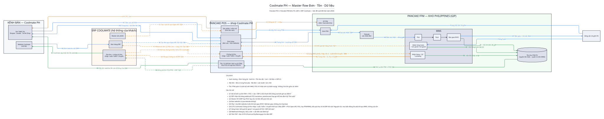

Coolmate PH — Luồng đơn, tồn kho và dữ liệu POS ↔ FFM ↔ ERP Coolmate
Cập nhật: 2026-10-14 · Bản nháp để thảo luận · Người soạn: Long (PM)
Bối cảnh
- GIP FFM onboard 1 kho FFM mới ở Philippines để phục vụ khách lớn Coolmate.
- Coolmate có 2 nguồn đơn:
- Đơn sàn (Shopee, Lazada, TikTok Shop PH) tích hợp thẳng vào Pancake POS.
- Đơn website nội bộ về ERP Coolmate trước, rồi ERP tạo đơn sang POS qua Open API.
- Mọi đơn đi từ POS sang FFM để telesale, vận hành và đóng gói trên WMS, rồi bàn giao cho hãng vận chuyển PH.
- ERP Coolmate là hệ thống của khách. Pancake chỉ tích hợp qua Open API và webhook.
Đã chốt
- Tồn kho: WMS tính tồn, POS chỉ hiển thị (ánh xạ tồn từ FFM).
- Tồn trên sàn: POS đẩy realtime lên sàn.
- Tồn trên website: POS/FFM đồng bộ tồn về ERP Coolmate, Coolmate tự cập nhật lên website nội bộ.
- Không chia tồn (buffer hoặc %) giữa các kênh.
- Đơn sàn: mã vận đơn và mẫu in sàn lấy qua POS.
- Đơn đã bàn giao ĐVVC: không cho phép hủy hoặc xóa.
- Đơn mới về: đẩy ngay từ POS sang FFM.
- Đơn sàn bỏ qua telesale (không có SĐT khách).
Sơ đồ theo luồng
Mỗi sơ đồ chia cột theo 4 bên: Kênh bán / Coolmate / Pancake / Vận chuyển. Mũi tên liền = gọi hoặc đẩy dữ liệu, mũi tên đứt = trả trạng thái hoặc kết quả.
[cần build] = phần chưa có. ?Qn = câu hỏi mở tương ứng ở cuối trang.1. Luồng đơn sàn (Shopee / Lazada / TikTok Shop PH)
sequenceDiagram
autonumber
box rgb(246,248,250) Kênh bán
participant SAN as Sàn TMĐT PH
end
box rgb(255,248,240) Coolmate
participant ERP as ERP Coolmate
end
box rgb(240,246,255) Pancake
participant POS as Pancake POS
participant FFM as Pancake FFM (OMS + Telesale)
participant WMS as WMS kho PH
end
box rgb(246,248,250) Vận chuyển
participant DVVC as Hãng vận chuyển PH
end
SAN->>POS: Đơn mới (API), webhook bổ sung khách hàng + trạng thái
POS->>POS: Gán kho POS (map kho FFM PH), giảm "Có thể bán"
POS->>FFM: Đẩy đơn sang FFM ngay khi đơn mới về
Note over FFM: Bỏ qua telesale (đơn sàn không có SĐT)
POS->>SAN: Chuẩn bị hàng, lấy mã vận đơn
SAN-->>POS: Mã vận đơn + mẫu in sàn
FFM->>POS: Lấy mã vận đơn + mẫu in sàn qua POS
POS-->>FFM: Mã vận đơn + mẫu in sàn
FFM->>WMS: Đơn chờ in
WMS->>WMS: Pick, pack, in tem sàn
WMS->>DVVC: Bàn giao hàng + mã vận đơn
WMS-->>FFM: Đã đóng gói, đã bàn giao
DVVC-->>FFM: Trạng thái vận chuyển
FFM-->>POS: Trạng thái + tracking (FFM giữ dữ liệu vận hành)
POS-->>SAN: Cập nhật trạng thái / vận đơn lên sàn
POS-->>ERP: Webhook đơn + trạng thái (cả đơn sàn) [ERP cần build nhận] ?Q8
alt Hàng hoàn
DVVC->>WMS: Trả hàng hoàn
WMS->>WMS: QC good / not good, hàng good cộng lại tồn
WMS-->>POS: Kết quả QC hàng hoàn ?Q7
end
2. Luồng đơn website Coolmate
sequenceDiagram
autonumber
box rgb(246,248,250) Kênh bán
participant WEB as Website Coolmate
end
box rgb(255,248,240) Coolmate
participant ERP as ERP Coolmate
end
box rgb(240,246,255) Pancake
participant POS as Pancake POS
participant FFM as Pancake FFM (OMS + Telesale)
participant WMS as WMS kho PH
end
box rgb(246,248,250) Vận chuyển
participant DVVC as Hãng vận chuyển PH
end
WEB->>ERP: Khách đặt đơn
ERP->>POS: Tạo đơn qua Open API (kho = kho map FFM PH, tiền PHP, địa chỉ Province/City/Barangay) [Coolmate build] ?Q9
POS-->>ERP: Trả mã đơn POS
POS->>POS: Giảm "Có thể bán"
POS->>FFM: Đẩy đơn sang FFM ngay khi đơn mới về
opt ?Q4 Đơn website có qua telesale?
FFM->>FFM: Gọi xác nhận đơn
end
FFM->>WMS: Đơn đã xác nhận, chờ in
WMS->>WMS: Pick, pack
WMS->>DVVC: Bàn giao hàng + mã vận đơn
DVVC-->>FFM: Trạng thái vận chuyển
FFM-->>POS: Trạng thái + tracking
POS-->>ERP: Webhook trạng thái đơn ?Q8
ERP-->>WEB: Cập nhật trạng thái cho khách
alt Khách hủy / sửa đơn TRƯỚC khi bàn giao ĐVVC
WEB->>ERP: Hủy / sửa đơn
ERP->>POS: Cập nhật / hủy đơn qua Open API
POS->>FFM: Đồng bộ thay đổi (POS giữ dữ liệu thương mại)
Note over FFM,WMS: ?Q5 Đơn đang pick / pack / đã đóng gói thì xử lý thế nào?
else Đơn ĐÃ bàn giao ĐVVC
ERP->>POS: Yêu cầu hủy / xóa
POS-->>ERP: Không cho phép hủy / xóa
end
3. Luồng đồng bộ tồn kho (FFM/WMS là nguồn tồn thật, không chia tồn)
sequenceDiagram
autonumber
box rgb(240,246,255) Pancake
participant WMS as WMS kho PH
participant FFM as Pancake FFM
participant POS as Pancake POS
end
box rgb(246,248,250) Kênh bán
participant SAN as Sàn TMĐT PH
end
box rgb(255,248,240) Coolmate
participant ERP as ERP Coolmate
participant WEB as Website Coolmate
end
rect rgb(242,251,244)
Note over WMS,FFM: Biến động tồn chỉ phát sinh trên WMS
WMS->>FFM: Nhập xong (putaway): cộng tồn
WMS->>FFM: Đơn đã gửi: trừ tồn thực tế
WMS->>FFM: Hàng hoàn đạt QC: cộng tồn
end
FFM->>POS: Ánh xạ tồn FFM sang POS ?Q1
par Đẩy lên sàn
POS->>SAN: Đẩy tồn realtime (tổng "Có thể bán" các kho đồng bộ)
and Đồng bộ về ERP
POS->>ERP: Đồng bộ tồn (webhook hay ERP kéo API?) ?Q2
ERP->>WEB: Coolmate cập nhật tồn lên website
end
rect rgb(255,245,245)
Note over SAN,ERP: Khi có đơn mới ở 1 kênh
SAN->>POS: Đơn mới
POS->>POS: Giảm "Có thể bán" (tạm giữ)
POS->>SAN: Đẩy lại tồn mới lên các sàn
POS->>ERP: Đồng bộ tồn mới về ERP, website cập nhật theo
end
Note over ERP,POS: ?Q1 Độ trễ cả chuỗi phải đủ nhanh để chống oversell giờ cao điểm · ?Q6 Không sửa tồn trực tiếp ở ERP/POS, mọi biến động đi qua WMS
4. Sản phẩm + chứng từ kho (nhập / xuất / kiểm / chuyển)
sequenceDiagram
autonumber
box rgb(255,248,240) Coolmate
participant ERP as ERP Coolmate
end
box rgb(240,246,255) Pancake
participant POS as Pancake POS
participant FFM as Pancake FFM
participant WMS as WMS kho PH
end
box rgb(246,248,250) Kênh bán
participant SAN as Sàn TMĐT PH
end
rect rgb(246,248,250)
Note over ERP,SAN: A. Sản phẩm (đề xuất ERP làm master) ?Q3
ERP->>POS: Tạo / sửa sản phẩm + mẫu mã qua Open API
POS->>FFM: Đồng bộ sản phẩm 1 chiều
FFM->>FFM: Gán SKU / barcode kho
POS->>SAN: Link SKU sàn (tự động khi mã khớp chính xác)
end
rect rgb(255,248,240)
Note over ERP,WMS: B. Phiếu nhập: phương án đề xuất, chốt với CTO Coolmate ?Q6
ERP->>POS: Tạo phiếu nhập qua Open API
POS->>FFM: Phiếu nhập sang FFM (đã có)
FFM->>WMS: Nhận hàng, QC, putaway
WMS-->>FFM: Số lượng thực nhận
FFM-->>POS: Trạng thái + số lượng QC (đã có)
POS-->>ERP: Kết quả nhập về ERP [cần build]
end
rect rgb(255,245,245)
Note over ERP,WMS: C. Xuất / kiểm / chuyển: chưa có luồng POS sang WMS, chốt với CTO Coolmate ?Q6
Note over ERP,POS: Xuất kho bán hàng: suy từ webhook đơn (không có phiếu xuất riêng)?
Note over POS,WMS: Kiểm kho / chuyển kho: khởi tạo ở ERP, POS hay WMS? Kết quả về ERP?
end
Master flow tổng (1 hình)
Xanh dương = Đơn hàng (A) · Xanh lá = Tồn kho (B) · Cam = Dữ liệu ↔ ERP (C). Nét liền = đã có trong Pancake, nét đứt = cần build hoặc cần chốt. Hình rộng, kéo ngang để xem; mở hình riêng để phóng to.

Dữ liệu: nguồn và cách đồng bộ
| Dữ liệu | Hệ thống nguồn | Đường đi | Trạng thái |
|---|---|---|---|
| Đơn sàn | Sàn | Sàn → POS → FFM (đẩy ngay, bỏ qua telesale) | Có sẵn |
| Đơn website | ERP Coolmate | ERP → POS (Open API tạo đơn) → FFM | Coolmate build phía ERP. Cần chốt Q4, Q5, Q9 |
| Trạng thái / tracking | FFM (vận hành) + hãng vận chuyển | FFM → POS → sàn. POS → ERP (webhook đơn) | FFM → POS → sàn có sẵn. Phía ERP cần build (Q8) |
| Mã vận đơn + mẫu in sàn | Sàn | Sàn → POS → FFM in tem khi đóng gói | Đã chốt |
| Sản phẩm | Đề xuất: ERP làm master | ERP → POS (Open API) → FFM (1 chiều). POS link SKU sàn | Cần chốt Q3 |
| Tồn kho | FFM/WMS | FFM → POS (ánh xạ) → sàn và ERP → website | FFM → POS → sàn có sẵn. POS → ERP cần chốt Q1, Q2 |
| Chứng từ kho nhập / xuất / kiểm / chuyển | Cần chốt với CTO Coolmate | Phiếu nhập POS ⇄ FFM đã có 2 chiều. Xuất / kiểm / chuyển sang WMS hiện chưa có | Q6 |
| Hàng hoàn | FFM/WMS (QC good / not good) | Hàng đạt QC cộng lại tồn FFM. Kết quả về POS/ERP chưa rõ | Q7 |
| Đơn → ERP (căn cứ xuất kho) | POS | Webhook đơn, gồm cả đơn sàn | Cần chốt Q6, Q8 |
Câu hỏi mở — chốt với Coolmate
- Q1. Độ trễ đồng bộ tồn: ánh xạ FFM → POS rồi POS → sàn và ERP có đủ nhanh để chống oversell giờ cao điểm không?
- Q2. Cách ERP nhận tồn: qua webhook POS (
variations_warehouses) hay ERP gọi API kéo định kỳ? Tần suất bao lâu? - Q3. Master sản phẩm đặt ở ERP hay POS? Quy tắc mã SKU để POS tự link sàn (khớp chính xác, phân biệt hoa thường).
- Q4. Telesale cho đơn website: có qua telesale không, hay coi như đã xác nhận?
- Q5. Hủy / sửa đơn website trước khi bàn giao ĐVVC: đơn đang pick, pack hoặc đã đóng gói thì xử lý thế nào? (Đã bàn giao ĐVVC: không cho hủy/xóa.)
- Q6. Chứng từ kho CTO Coolmate
- Phiếu nhập, xuất, kiểm, chuyển khởi tạo ở đâu: ERP → POS Open API, POS, hay FFM/WMS?
- Số thực tế (QC, kiểm kê) trả về ERP thế nào? ERP có cần chứng từ xuất riêng hay suy ra từ đơn?
- Nguyên tắc đề xuất: mọi biến động tồn đi qua WMS, không sửa tồn trực tiếp ở ERP/POS.
- Q7. Kết quả QC hàng hoàn (good / not good) về POS và ERP thế nào?
- Q8. Đối soát webhook: webhook POS không ký, chỉ retry 2 lần (sau 10 phút rồi 30 phút). Có cần job đối soát định kỳ đơn và tồn với ERP?
- Q9. Dữ liệu PH: tiền PHP và địa chỉ PH (Province / City / Barangay) cho đơn tạo từ ERP.
Câu hỏi nội bộ — team Pancake tự trả lời trước buổi chốt
Hoàn toàn nội bộ
| # | Câu hỏi | Người trả lời |
|---|---|---|
| Q1 | Ánh xạ tồn FFM → POS → sàn/ERP hiện trễ bao lâu? Ngày campaign có chống được oversell không? | Thắng (FFM), Lại Hoàng (POS) |
| Q5 | Đơn đang pick, pack hoặc đã đóng gói mà POS gửi hủy/sửa thì FFM xử lý thế nào: chặn, cảnh báo hay trả về kho? | Quang, Thắng |
| Q7 | Kết quả QC hàng hoàn có trả về POS không? Tài liệu FFM chưa ghi. | Thắng |
Coolmate quyết, nội bộ cần chuẩn bị năng lực trước
| # | Coolmate quyết | Nội bộ cần trả lời trước |
|---|---|---|
| Q2 | ERP nhận tồn theo cách nào | Webhook tồn của POS có đủ tin cậy? ERP gọi API kéo tồn thì giới hạn tần suất bao nhiêu? (Vũ Sơn) |
| Q3 | Master sản phẩm ở ERP hay POS | Tạo sản phẩm qua Open API có tự đồng bộ sang FFM không? (Vũ Sơn, Thắng) |
| Q4 | Đơn website có cần telesale | FFM có cấu hình bỏ telesale theo nguồn đơn được không? (Quang) |
| Q6 | Chứng từ kho khởi tạo ở đâu | Hiện POS → WMS chỉ có phiếu nhập. Xuất / kiểm / chuyển phải build bao nhiêu? Ước lượng trước buổi gặp CTO (SH, Thăng Long) |
| Q8 | Có cần job đối soát | Webhook POS không ký, retry 2 lần. Phía mình có cơ chế bù khi gửi lỗi không? (Rem) |
| Q9 | Coolmate tự build phần tạo đơn | Đưa spec: warehouse_id ở cấp gốc request, tiền PHP, địa chỉ Province / City / Barangay (Vũ Sơn) |
Câu nội bộ mới (rút từ tài liệu POS / FFM)
| # | Câu hỏi | Người trả lời |
|---|---|---|
| I1 | POS: đơn sàn trừ ngay cả "Có thể bán" lẫn "Tồn kho" (BR-INV-004), trái quy tắc chung BR-INV-002. Có lệch với số FFM ánh xạ về không? (đang mở là Q27 bên POS) | Thăng Long |
| I2 | Đồng bộ FFM → POS giới hạn 15 request/giây/shop. Đơn Coolmate nhiều thì ngày campaign có nghẽn trạng thái không? | SH |
| I3 | Kho POS tạo sau khi kết nối phải map tay sang kho FFM (backlog #193) → chốt danh sách kho trước go-live. | Thắng |